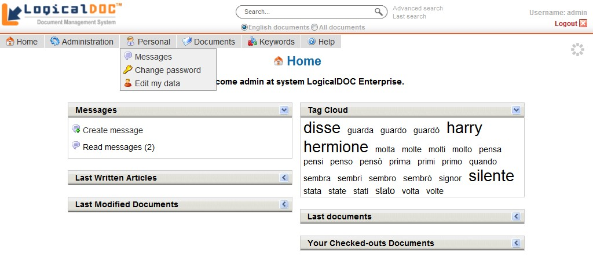
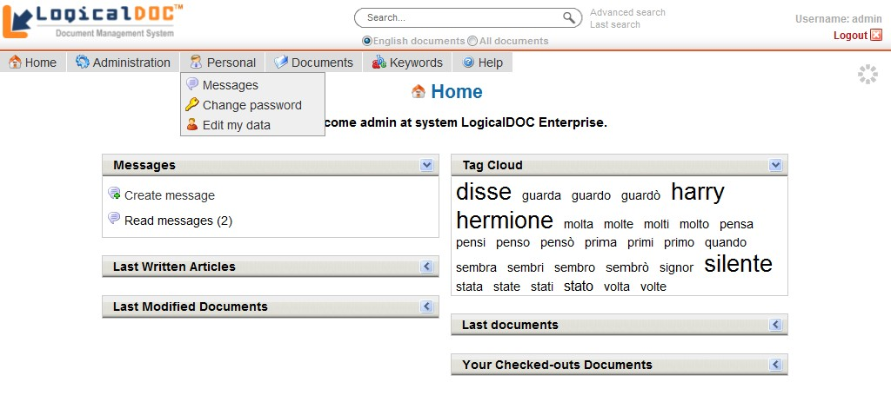

LogicalDOC Guía de Uso |
Este manual contiene información de cómo usar LogicalDOC: el sistema de Gestión Documental accessible cómodamente desde vuestro navegador.

Este manual contiene información de cómo usar LogicalDOC: el sistema de Gestión Documental accessible cómodamente desde vuestro navegador.  |